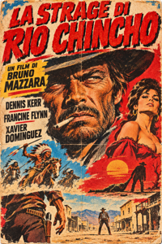

Бруно Маццара — ЧЕРНОВИК
Бруно Маццара (Bruno Mazzara; 1921-1996) — итальянский и верхнепаннонский кинорежиссёр.
Карьера в Италии
Маццара родился в Палермо, в бедной семье, и не получил систематического образования. С детства он фанатично любил кино: сторожа единственного в квартале кинотеатра он подкупал мелкой работой, чтобы смотреть сеансы бесплатно. Он участвовал во Второй мировой войне, служил в Греции, куда его часть вошла в 1940 году. После войны и демобилизации перебрался в Рим, где работал на киностудиях Чинечитта, начиная со статиста и рабочего по декорациям. В эти годы он хорошо освоил многие кинематографические ремёсла, приобрёл понимание процесса производства фильма, обзавёлся связями. К началу 1960-х годов Маццара дорос до помощника режиссёра на съёмках пеплумов Серджо Корбуччи, таких как «Ромул и Рем» (1961) и «Сын Спартака» (1962). Затем он и сам начал ставить фильмы, поначалу самые дешёвые и низкопробные, вроде эротики и триллеров категории B. Заработав репутацию солидного ремесленника, который укладывается в бюджет и сроки и выдаёт продукт приемлемого качества, Маццара стал получать более дорогостоящие проекты. Успех «Пригоршни долларов» Леоне (1964) и «Джанго» Корбуччи (1966) направил его к спагетти-вестерну.


Вершиной режиссёрской карьеры Маццара стал вестерн «Резня в Рио-Чинчо» (La Strage di Rio Chincho), вышедший в 1969 году. В техасский городок Рио-Чинчо приезжает некий Метис Боб; про него известно лишь, что он мастерски стреляет и имеет какие-то связи на индейской территории. Город разделён на две враждующие общины — шотландскую и ирландскую; открытой войны нет, но шотландцы с ирландцами бойкотируют друг друга, эпизодически кого-нибудь находят мёртвым, и атмосфера накалена до предела. Священники обеих общин — католический и протестантский — в проповедях призывают к миру, но плетут всевоможные козни, чтобы спровоцировать другую сторону первой начать конфликт. Как только Метис Боб появляется в городе и при случае демонстрирует своё мастерство стрелка, обе общины начинают тайно заманивать его на свою сторону; протестантский священник соблазняет его деньгами, католический подсылает красавицу-ирландку Аннабель, владелицу салуна. Боб ведёт свою непонятную игру, давая неопределённые обещания обоим. В конце концов он предлагает обеим сторонам план: пользуясь своими связями, он организует налёт небольшой индейской банды; под этим прикрытием можно будет устроить резню враждебной общины, а потом свалить всё на индейцев. Обе стороны начинают готовиться к бою. Но вместо небольшой банды Метис приводит целое племенное войско; индейцы начинают грабить и убивать всех без разбора, и жители Рио-Чинчо вынуждены обороняться — шотландцы с ирландцами на одной стороне. В суматохе битвы гибнет протестантский священник, а Аннабель убивает католического. Индейцы побеждены; жители городка, объединённые общим врагом, оставляют свою вражду, тем более что обоих её разжигателей больше нет в живых; Метис Боб уезжает в закат с удовлетворённой улыбкой.
Сценарий написал сам Маццара. В фильме снимались второразрядные итальянские актёры под американскими псевдонимами, не особенно блиставшие игрой. В сценарном и визуальном плане Маццара старательно воспроизвёл находки Леоне и Корбуччи, но общий тон кажется чем-то промежуточным между классическим и ревизионистским вестерном. Метис Боб — ревизионистский антигерой-циник, но его мотивация в конце концов оказывается идеалистической: примирить враждующие общины посредством общего врага; индейцы изображены в старомодном духе дегуманизированными варварами. Побочная линия, отношения Аннабель с католическим священником, развита в духе психологической драмы с оттенком садомазохистской эротики. Фильм не имел большого успеха и прошёл бы совершенно незамеченным, если бы не Северин Гоубка, коммунистический диктатор Народной Республики Верхняя Паннония.
Популярность в Верхней Паннонии
Маццара вырос на консервативной религиозной Сицилии и воевал в рядах армии Муссолини; это сделало его убеждённым антиклерикалом, антифашистом и пацифистом. Эти взгляды отчётливо выразились и в сюжете «Резни в Рио-Чинчо», где главными злодеями выступают священники, а межэтническая вражда объясняется их коварными манипуляциями. Маццара не состоял в левых организациях, но не скрывал своих прокоммунистических симпатий. В интервью после премьеры фильма он сказал:
Мы смеёмся над странами вроде Албании или Верхней Паннонии. А вы знаете, что в Паннонии за год построили больше квартир, чем в Италии, хотя население там в сорок раз меньше? Там квартиры раздают рабочим бесплатно, понимаете? Спросите любого нормального человека, в какой стране он хотел бы жить: где полно бездомных, зато можно ругать президента, или где президента ругать нельзя, зато можно даром получить квартиру? Может, нам на Западе стоит поменьше хвастаться своей свободой? Что даёт человеку больше реальной свободы: статья конституции или собственное жильё?
Это высказывание было замечено в Верхней Паннонии и принято с восторгом: страна не была избалована похвалами западных мастеров культуры. Оно было растиражировано в СМИ, называвших Маццару «выдающимся прогрессивным режиссёром, признанным мастером итальянского кинематографа», и донесено до самого Гоубки. Слова итальянца были музыкой для ушей Высшего Вождя: он и сам гордился успехами своей жилищной программы (вполне заслуженно; см. статьи об округах Вроновицы: Пятом, Шестом, Седьмом). Гоубка велел показать ему фильмы Маццары. Большинство не годилось для проката в Народной Республике по цензурным соображениям, но «Резня в Рио-Чинчо» выглядела вполне приемлемо. Антицерковный и интернационалистский пафос полностью соответствовал идеологии партии, а несколько откровенных сцен с Аннабель можно было вырезать без вреда для сюжета. Гоубка распорядился купить фильм, и в начале 1970 года он вышел на экраны НРВП под названием «Непримиримость» (Neumirnoscz).
До тех пор западное развлекательное кино не закупалось в Паннонии — как по идеологическим, так и по экономическим мотивам. Изредка прокатывали довоенные американские вестерны, и неприхотливый паннонский зритель принимал даже их на ура. «Непримиримость» же стала сенсацией и культурным феноменом небывалого масштаба. По количеству проданных билетов её рекорд не побит до сих пор. Люди брали кассы кинотеатров штурмом, и этот ажиотаж не спадал месяцами: фильм пересматривали десятки раз, выучивали наизусть. Приобретённая по бросовой цене лента окупилась стократно. Исполнители ролей Метиса Боба и Аннабель — никому прежде не известные Деннис Керр (настоящее имя Карло Латтанци) и Франсин Флинн (Микела Барбьери) — стали суперзвёздами национального масштаба, самыми знаменитыми западными актёрами в стране. Мальчишки во дворах играли в шотландцев и ирландцев. Для подростков постарше Франсин Флинн надолго стала главным объектом сексуальных фантазий, хотя самые рискованные сцены с ней (соблазнение Боба, порка священником) были немилосердно отцензурированы. Сам режиссёр долго пребывал в неведении о своём бешеном успехе в социалистической Паннонии. Но весной 1970 года ему начали приходить письма.
Реакция режиссёра
Много лет спустя Маццара писал в мемуарах:
Люди писали на официальный адрес студии. Письма шли месяцами, потому что всю корреспонденцию с заграницей изучала тайная полиция. Большинство было на паннонском языке — их я просто выбрасывал, потому что не мог прочесть ни буквы. Некоторые пытались писать по-итальянски, но, не зная языка, просто открывали словарь и подставляли слово за словом; это тоже было почти невозможно понять. Но некоторые писали на почти правильном итальянском. Они выучили его специально для переписки со мной.
Там были смешные моменты — например, многие мужчины просили адрес или фото Франсин Флинн. Женщины просили адрес или фото Денниса Керра, и интересовались, нет ли у него отношений с Франсин в реальной жизни. Но в основном я читал и плакал. Они писали, что я самый гениальный режиссёр в мире. Что мой фильм — лучшее, что они видели за всю свою жизнь. Что я перевернул их мир.
Но одно письмо меня просто добило. Мне прислали вырезку из местного журнала, статью одного кинокритика, с переводом. Он там всерьёз ставил меня в один ряд с Антониони и Феллини. Рассуждал о глубокой философии «Резни в Рио-Чинчо». Я решил было, что это пародия, но нет. Я потом общался с этим критиком. Они там просто не владели контекстом. Они не понимали, где проходит граница между настоящими фильмами и дерьмом. Раз уж партия удостоила мой фильм прокатом в их стране, они все решили, что он настоящий.
Я после этой статьи напился и проревел всю ночь. Я кричал с балкона: «Господи, я в тебя не верю, но я тебе клянусь, что больше не буду снимать дерьмо». После того, как меня вознесли на такую высоту, я уже не мог быть прежним Бруно Маццарой. Я перестал бы себя уважать, если бы продолжал заниматься халтурой ради заработка. Я должен был стать тем Бруно Маццарой, каким меня видели в этой стране.
Режиссёр написал лично Гоубке, поблагодарил за внимание к своему творчеству и предложил снять какой-нибудь фильм специально для паннонского зрителя:
В Вашей стране меня оценили куда выше моего истинного достоинства. Воспринимая эту оценку как кредит, я готов вернуть его, поставив свои способности на службу народу Верхней Паннонии.
В ожидании ответа Маццара решил побольше узнать об этой стране и купил несколько переведённых романов Доменика Рачева, но ни одного не смог прочитать дальше первых страниц. Вскоре пришёл ответ Гоубки. Генералиссимус любезно предлагал приехать в НРВП, встретиться лично с ним и обсудить сюжеты будущих фильмов. Режиссёр из капиталистической страны, готовый переехать в Народную Республику, был ценнейшим пропагандистским трофеем, а тем более Бруно Маццара с его немыслимой популярностью. В июле 1970 года режиссёр прилетел во Вроновицу.
ПРОДОЛЖЕНИЕ СЛЕДУЕТ
Категории: Черновики, Авторы, Кино, Культура, Персоналии, Социалистическая эпоха